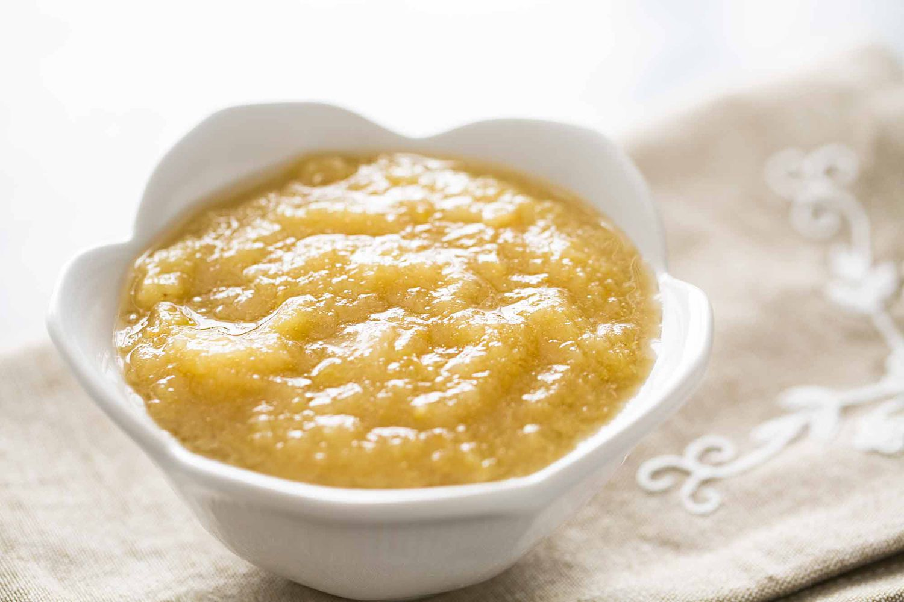

World's Best Applesauce

The BEST Applesauce you'll ever experience
The secret to my dad's applesauce is that he adds a couple strips of lemon peel
to the apples, as well as some lemon juice or apple cider vinegar,
while they are cooking.
The tartness of the lemon or vinegar serves to intensify the taste of the apples,
and helps balance out the sweetness of the sauce.
The result is a refreshing, utterly delicious applesauce.
Ingredients you'll need:
-
4 pounds (about 8 to 10 apples, depending on the size) apples, peeled,
cored, and quartered (Use apples varieties that are good for cooking,
such as Granny Smith, Pippin, Gravenstein, Mcintosh, Fuji, Jonathan,
Jonagold, or Golden Delicious.)
-
2 strips lemon peel (use a vegetable peeler to strip the zest only,
not the pith)
-
3 tablespoons lemon juice or apple cider vinegar (more or less to taste)
-
1/2 teaspoon ground cinnamon
-
Up to 1/2 cup white sugar (can sub half with brown sugar)
-
1 cup water
-
1/2 teaspoon salt
How to make it:
-
Place the peeled, cored, and quartered apples into a large pot.
Add the strips of lemon peel, the lemon juice (or vinegar), cinnamon,
sugar, water and salt. You might want to start with half the sugar at
this point and add more to taste later.
-
Bring to a boil on high heat, then lower the temperature.
Cover the pot, and maintain a low simmer for 15 to 20 minutes,
until the apples are completely tender and cooked through.
-
Once the apples are cooked through, remove the pot from the heat.
Remove the lemon peels.
Use a potato masher to mash the cooked apples in the pot to make a
chunky applesauce. For a smoother applesauce you can either run the cooked
apples through a food mill, or purée them using a stick blender or a standing
blender. (If using a standing blender, do small batches, and do not fill
the blender bowl more than halfway.)
-
If the applesauce is too thick, add more water to thin it out.
If not sweet enough, add more sugar to taste. If too sweet, add more lemon juice.
-
Enjoy! This applesauce is delicious either hot or chilled.
It pairs well with pork chops for savory dishes, it's terrific with
cottage cheese as a snack or light lunch, and it's great with vanilla ice
cream or yogurt. Freezes well and will last at least 1 year in a
cold freezer. If you freeze it, make sure to allow enough headroom
(at least 1 inch) in your jar for expansion.